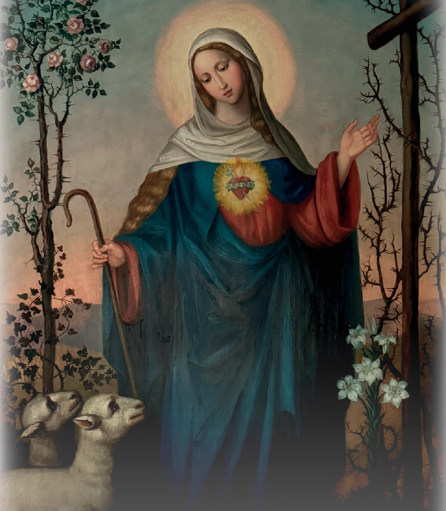

O Rosário do Pastor

O Rosário do Pastor
Uma Jóia do Céu
História do Rosário do Pastor
Em Dorfen, na Baixa Baviera, encontrava-se num campo uma antiga imagem da Mãe de Deus onde uma pobre pastora guardava as suas ovelhas. Perante esta imagem de graça, a donzela prometera rezar nove rosários todos os dias. Entretanto, sobreveio um grande calor na região, de modo que os animais não lhe davam descanso para rezar. Nesta aflição, Nossa Senhora apareceu-lhe a 20 de Junho de 1642 e disse que lhe ensinaria uma pequena oração que vale tanto como se rezasse nove rosários todos os dias. No entanto, deveria também ensinar zelosamente a outras pessoas esta saudação preciosa.* A pastora guardou esta pequena oração consigo até à morte, pelo que não pôde imediatamente ser beatificada e teve de « vaguear » como Alma do Purgatório. Quando interrogada sobre isso, respondeu que tinha negligenciado dar a conhecer esta saudação celestial a outros.
(Segundo uma tradição popular)
Rosário do Pastor
Deus vos salve, Maria,
Filha do Pai Celeste!
Deus vos salve, Maria,
Mãe do Filho Unigénito!
Deus vos salve, Maria,
Esposa Imaculada do Espírito Santo!
Ó Maria, saúdo-vos 33 mil vezes, como o santo Arcanjo Gabriel vos saudou.
Que alegre o vosso coração e o meu por o santo Arcanjo vos ter trazido esta saudação celestial e vos ter dito:
Ave Maria, … (rezada 3 vezes)
Com esta saudação especial, Nossa Senhora não pretendeu de modo algum diminuir as grandes promessas e a importância do saltério do Rosário, mas antes acrescentar outra jóia preciosa ao nosso tesouro pessoal de oração. Ao mesmo tempo, a Mãe de Deus quis também abrir os tesouros de graça da oração do Rosário àqueles que, como outrora a pastora, estão numa verdadeira « necessidade de tempo ».
Uma Ave Maria bem rezada é para o demónio um inimigo que o põe em fuga, um martelo que o esmaga, para a alma um meio de santificação, para os anjos uma alegria. É o hino dos eleitos, o Cântico da Nova Aliança, o encanto de Maria e a glorificação da Santíssima Trindade.
(São Luís Maria Grignion de Montfort)